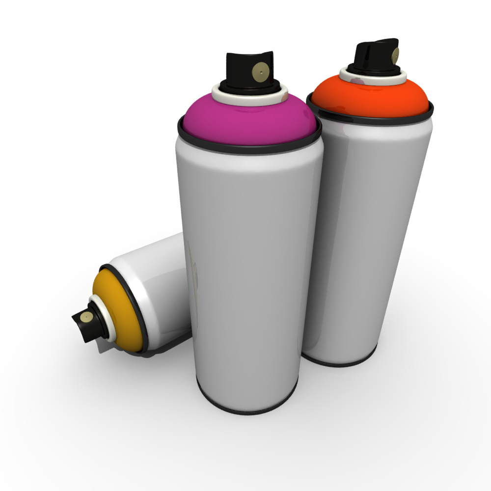

فروش و توزیع کالای تندمصرف (Fast Moving Consumer Goods) از نظر فنی و زیرساختی چالشهای پیچیدهتری نسبت به سایر گروههای محصولی دارد. به همین دلیل دیجیکالا به دنبال یک شریک تجاری موفق بود تا با کمک تجربه آن، این دسته از محصولات را عرضه کنند و در نهایت «سوپرمارکت اینترنتی روکولند» به دلیل سابقه طولانی در پخش کالای تندمصرف برای این همکاری انتخاب شد. در تیرماه سال ۱۳۹۷ این شرکت با خرید این فروشگاه، فروش محصولات تازه سوپرمارکتی به صورت آنلاین را آغاز کرد. بخش سوپرمارکت دیجیکالا کالای تندمصرف از جمله مواد غذایی تازه، مواد غذایی خشک و کالاهای غیرخوراکی را در بر میگیرد که امکان ارسال سریع (۳ ساعته) به دست مشتریان در شهر تهران را فراهم کردهاست. کالاهای سوپر مارکت با نشان تازه (Fresh) از سایر کالاها در فروشگاه متمایز شدهاند.
